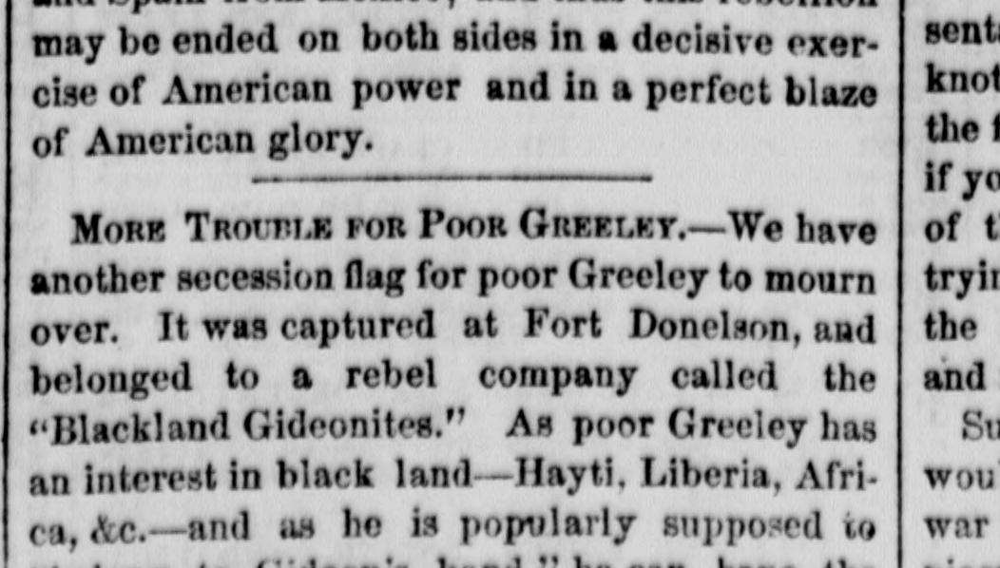

It was captured at Fort Donelson, and belonged to a rebelFue capturado en Fort Donelson, y pertenecía a un rebelde
The New York Herald. New York [N.Y.], February 25, 1862. Page 4. Also published as the New York Daily Herald. Published by James Gordon Bennett. A daily newspaper, 1840–1920.The New York Herald. New York [N.Y.], 25 de febrero de 1862. Página 4. También publicado como New York Daily Herald. Publicado por James Gordon Bennett. Periódico diario, 1840–1920. View the originalVer el original

 See the full pageVer la página completa
See the full pageVer la página completa
\1 mentions "black land—Hayti, Liberia, Africa" in a satirical remark regarding a captured secessionist flag from Fort Donelson called the "Blackland Gideonites" and mocks a figure identified as "poor Greeley." The excerpt also discusses President Lincoln's stated objective in issuing his April proclamation to preserve the Constitution and execute the laws of the Union against the rebellion.A tenor del extracto, \1 alude a «tierras de negros: Haití, Liberia, África» en una nota satírica sobre una bandera secesionista capturada en Fort Donelson denominada «Blackland Gideonites» y se mofa de una figura identificada como el «pobre Greeley». El texto analiza asimismo el objetivo declarado por el presidente Lincoln al promulgar su proclama de abril para preservar la Constitución y hacer cumplir las leyes de la Unión frente a la rebelión.
This collection gathers the coverage of the Dominican Republic in the American press, in the order it was published.Esta colección reúne la cobertura de la República Dominicana en la prensa estadounidense, en el orden en que se publicaron.